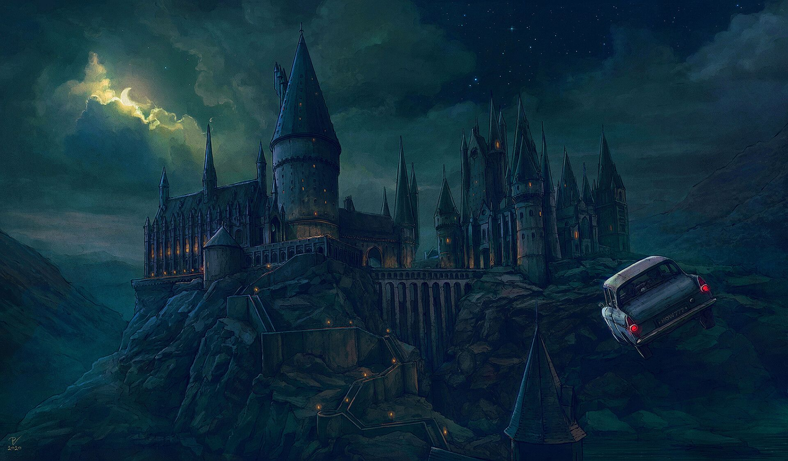

Explore o incrível universo de Harry Potter.
O Castelo de Hogwarts está localizado na Escócia, num local desconhecido, próximo da vila de Hogsmeade. Os Trouxas não conseguem nem ver, nem localizar a escola uma vez que esta possui imensos feitiços e encantamentos de proteção, sendo que os Trouxas apenas veem ruínas e sinais de aviso para se afastarem.

O castelo possui longos terrenos cobertos de relva, um campo de Quadribol, um lago chamado de O Lago Negro, uma grande e densa floresta chamada de a Floresta Proibida, entre outras construções. O castelo possui também a Torre das Corujas (ou Corujal) que abriga todas as corujas da escola e dos alunos. Existem 142 escadarias no castelo de Hogwarts. (A sua movimentação nunca foi descrita nos livros, apenas para as adaptações dos filmes, exceto do último, que seguiu fiel aos livros).
Em Hogwarts não existe eletricidade nem dispositivos eletrónicos à exceção de rádios, que não são alimentados por eletricidade, mas por magia.